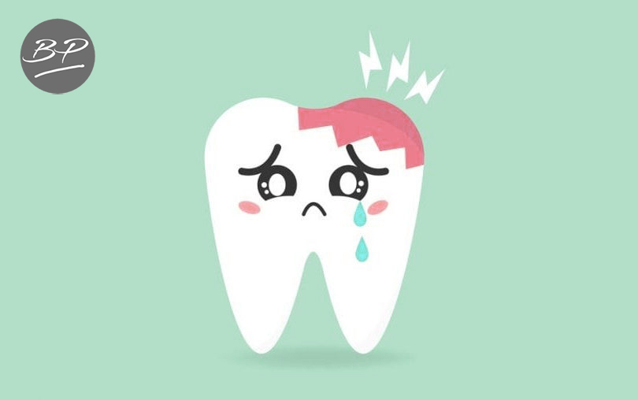
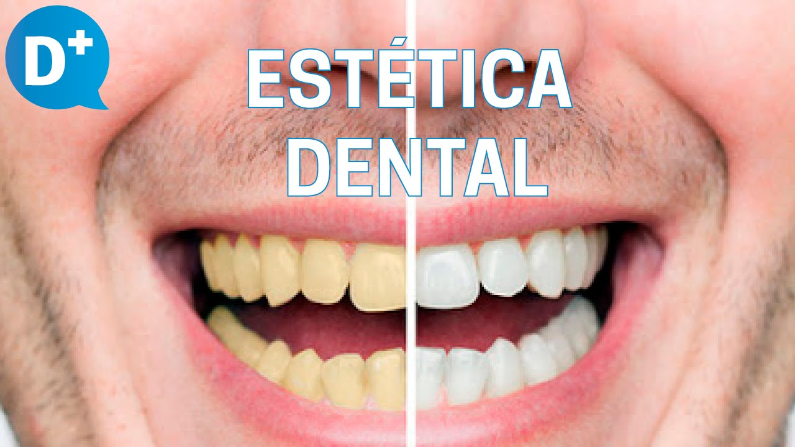

Caries.
La odontología conservadora tiene como objetivo la conservación de los dientes y del tejido dental sano, evitando siempre que sea posible la extracción de las piezas afectadas
+ Informacion


Estetica Dental.
En nuestra clínica ponemos a su disposición diferentes tratamiento odontológicos sencillos e indoloros que te ayudaran a mejorar la salud y apariencia de su boca
+ Informacion
Sensibilidad Dental.
La sensibilidad dental es una de las molestias dentales más frecuentes entre la población.Si se diagnostican de forma rápida, puede ser tratadas eficazmente.
+ Informacion